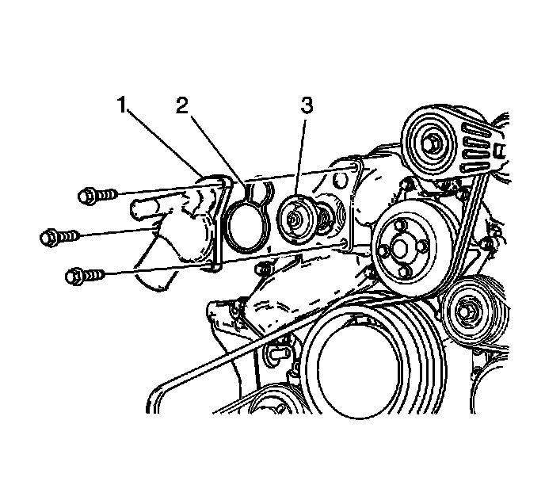

Engine Coolant Thermostat Housing Replacement
Engine Coolant Thermostat Housing Replacement (LH2 - Gas, 8 Cylinder, 4.6L, SFI, V8, DOHC, HO)
Removal Procedure

1. Drain the cooling system. Refer to Cooling System Draining and Filling (GE 47716 -Vac N Fill Coolant Refill Tool) (Service and Repair)Cooling System Draining and Filling (Static Fill) (Service and Repair) .
2. Remove the air cleaner outlet duct. Refer to Air Cleaner Outlet Duct Replacement (Service and Repair) .
3. Remove the radiator hose from the thermostat housing. Refer to Radiator Outlet Hose Replacement (LH2 - Heavy Duty Cooling) (Service and Repair)Radiator Outlet Hose Replacement (LH2 - Standard Cooling) (Service and Repair) .
4. Remove the heater hose from the thermostat housing.
5. Remove the thermostat housing bolts.
6. Remove the thermostat housing (1) with thermostat (3), from the water housing.
7. Remove and discard the seal ring (2).
8. Remove the thermostat from the thermostat housing.
Installation Procedure
1. Clean the thermostat housing and water housing sealing surfaces.
2. Install the thermostat to the thermostat housing.
3. Install the NEW seal (2) to the thermostat housing.
4. Install the thermostat housing (1) with the thermostat (3) and the seal (2) to the water housing.
Notice: Refer to Fastener Notice (Fastener Notice) .
5. Install the thermostat housing bolts.
Tighten the thermostat housing bolts to 10 N.m (89 lb in).
6. Install the heater hose to the thermostat housing.
7. Install the radiator hose to the thermostat housing. Refer to Radiator Outlet Hose Replacement (LH2 - Heavy Duty Cooling) (Service and Repair)Radiator Outlet Hose Replacement (LH2 - Standard Cooling) (Service and Repair) .
8. Install the air cleaner outlet duct. Refer to Air Cleaner Outlet Duct Replacement (Service and Repair) .
9. Fill the cooling system. Refer to Cooling System Draining and Filling (GE 47716 -Vac N Fill Coolant Refill Tool) (Service and Repair)Cooling System Draining and Filling (Static Fill) (Service and Repair) .